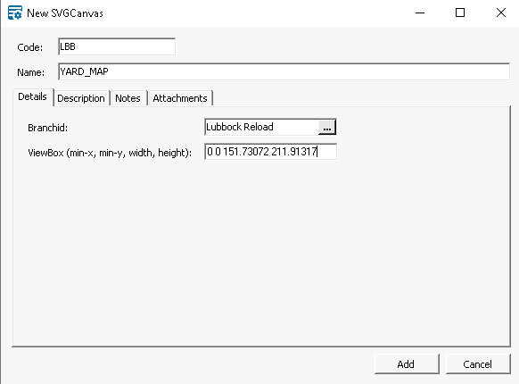
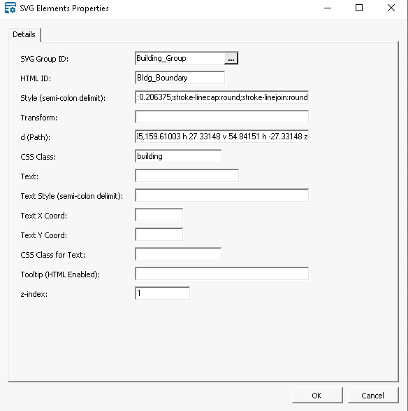

Epicor Insights 2025: Advanced BI Session
SVG
Scalable Vector Graphics (SVG) is an XML-based vector image format for two-dimensional graphics with support for interactivity and animation.
{kind=link}
 Design
Design
- Download or login to the vector illustrator program of your choice (e.g., Adobe Illustrator, Canva, CorelDraw, etc.). I'm using Inkscape (FOSS)
- For Examples 1 & 2, I imported a screenshot (File/Import) of Google Maps and set the transparancy to a value that I could draw on top of the imported layer in an "onion skin" fashion.
- I found it easier not to use layers when creating my drawing as this obfuscated the .svg file. YMMV.
- Naming each object (Object/Object Properties/ID --> Set) also helped when manipulating the SVG elements inside an HTML document.
- Optional: Convert each shape to a path object (Path/Object to Path). Although SVG can easily draw native shapes (e.g., rect, circles, etc.), paths make the JavaScript and database entries much simpler. If you plan to import the svg file using Ajax, this is less important.
- If it exists, delete any screenshot/bitmap layer from the file.
- Save or Export the file as a Plain SVG file
- When satisfied with your drawing, open the SVG file in a text editor and optionally add class or additional attributes
Load
Determine how you will load the SVG into your web page.
Example 1 uses JSON data to create the SVG
elements dynamically.
Example 2
loads the SVG directly file using Ajax.
Both allow for interactivity and styling using CSS.
Three User Defined Tables are used in Example 1 to create the SVG drawing:
- udoSVGCanvas
- udoSVGGroups
- udoSVGElements
As User Defined Tables are not exportable from Bistrack, the relevant table names and columns used to create the example are shown below.
udoSVGCanvas
TheudoSVGCanvas table is the top-level entity for individual drawings. Only
branch and
viewbox information are stored here.

SQL Definition:
TABLE [dbo].[udoSVGCanvas] -- A string with four space-delimited components: min-x min-y width height [ViewBox] [varchar](50) NULL, [BranchID] [int] NULL
udoSVGGroups
TheudoSVGGroups table contains information about individual groups of elements
within a drawing or canvas. Each group can have a name, tooltip, z-index (for drawing
order), and
visibility
status and can be styled together under the
SQL Definition:
TABLE [dbo].[udoSVGGroups]
/*
Each canvas consists of one or more groups.
*/
CREATE TABLE [dbo].[udoSVGGroups]
...
-- Typically all items in a group should have the same transform
[Transform] [varchar](255) NULL,
-- Links to udoSVGCanvas.UserDefinedObjectID
[SVGCanvasID] [int] NULL,
-- Group CSS class
[Class] [varchar](50) NULL,
[Text] [varchar](75) NULL,
-- Text x and y coords
[TextX] [numeric](13, 5) NULL,
[TextY] [numeric](13, 5) NULL,
-- Inline text styling (overrides class)
[TextStyle] [varchar](500) NULL,
-- Text CSS class
[TextClass] [varchar](50) NULL,
[Style] [varchar](500) NULL,
[ToolTip] [varchar](500) NULL,
[zIndex] [numeric](4, 0) NULL
udoSVGElements
TheudoSVGElements table contains information about individual elements within
a group. Similar to groups, each element can have a name, tooltip, z-index (for drawing
order), and visibility
status. Elements can be styled individually under the
SQL Definition:
/*
Each group contains one or more elements. Elements should be
converted to a path object ("d") instead of using the various types
(e.g., rect, circle, etc.).
*/
CREATE TABLE [dbo].[udoSVGElements]
...
-- Links to udoSVGGroups.UserDefinedObjectID
[SVGGroupID] [int] NULL,
-- HTML ID
[ID] [varchar](50) NULL,
-- Path CSS class
[Class] [varchar](50) NULL,
[d] [varchar](255) NULL,
[Transform] [varchar](255) NULL,
[Style] [varchar](500) NULL,
[Text] [varchar](75) NULL,
-- Inline text styling (overrides class)
[TextStyle] [varchar](500) NULL,
-- Text x and y coords
[TextX] [numeric](13, 5) NULL,
[TextY] [numeric](13, 5) NULL,
-- Text CSS class
[TextClass] [varchar](50) NULL,
-- Tooltip text / HTML
[ToolTip] [varchar](500) NULL,
-- For odering path elements
[zIndex] [numeric](4, 0) NULL,

{kind=link}
Example 1
SVG Example (static HTML)Hover over the drawn elements to see titles and hover actions.
- This example demonstrates the use of SVG in a web page and includes numerous design elements grouped together and styled with CSS.
- Groups and elements can be styled separately
- The data is loaded from JSON (see data variable)
- The railroad tracks, checkerbox loading area, and black circle (HTML) each display a title when hovered.
- The checkerbox background is defined using the "defs" and "pattern" tags (see SVG element)
- The black circle and green triangle are overlapped to show the drawing order (essentially, z-index)
- These shapes have all been converted to a path element. Note the triangle has an accompanying transform directive.
- The "Main" rectangle has a CSS hover element
- The green-shaded "Area 01" shows a shaded element with accompanying text
- Note the buttons along the bottom to save the SVG as a PNG and to show/hide a group
Example 1
The JSON used by Example 1 was created by running SQL against the three udo tables, udoSVGCanvas, udoSVGGroups, and udoSVGElements (see also Bistrack Tables section). The SQL used to create example one is shown below:
SELECT
c.BranchID
, c.[Name]
, c.ViewBox
, ( /* Sub selects create nested JSON structure for groups and elements */
SELECT
g.[Name]
, g.Style
, g.Transform
, g.Class
, g.Text
, g.TextStyle
, g.TextX
, g.TextY
, g.TextClass
, g.ToolTip
, g.zIndex
, (SELECT
e.ID
, e.d
, e.Transform
, e.Class
, e.Style
, e.Text
, e.TextStyle
, e.TextX
, e.TextY
, e.TextClass
, e.ToolTip
, e.zIndex
FROM udoSVGElements e WITH(NOLOCK)
WHERE e.Deleted = 0
AND e.SVGGroupID = g.UserDefinedObjectID
ORDER BY e.zIndex
FOR JSON PATH) AS [Elements]
FROM udoSVGGroups g
WHERE g.Deleted = 0
AND g.SVGCanvasID = c.UserDefinedObjectID
ORDER BY g.zIndex
FOR JSON PATH) AS [Groups]
FROM udoSVGCanvas c WITH(NOLOCK)
WHERE c.Deleted = 0
FOR JSON PATH